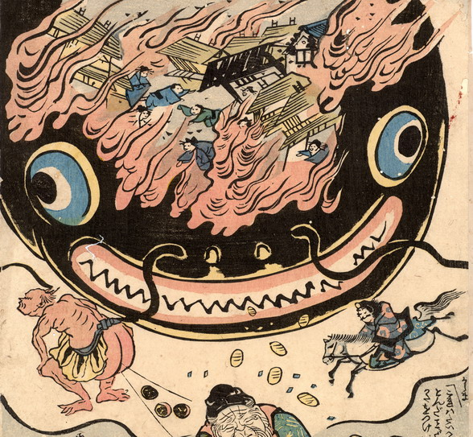

大きな鯰の頭部に、火事で燃え上がる家々と、逃げ惑う人々の姿が浮かび上がっている。鯰の口元から小判がこぼれており、その向かって右に馬に乗って駆けつける鹿島大明神が、左に小太鼓を尻から出す雷が描かれている。
出典：親書誌：U426_nichibunken_0174：（鯰と要石；ナマズトカナメイシ）／日付：2010／資源識別子：U426_nichibunken_0174_0001_0000
Copyright (c)2010- International Research Center for Japanese Studies, Kyoto, Japan. All rights reserved.